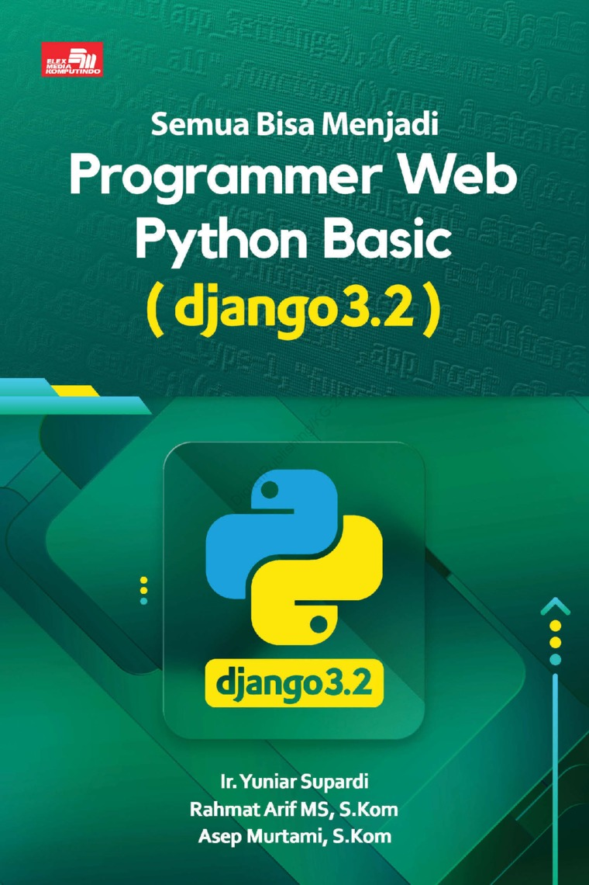
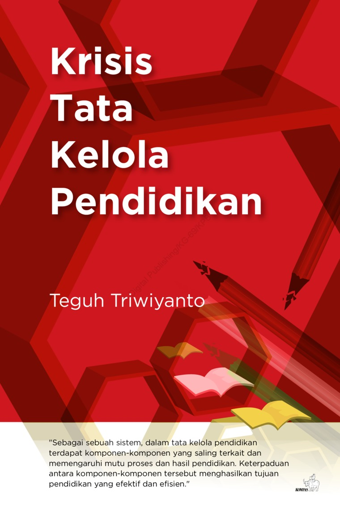

Teknik Pengolahan Audio & Video
Tanggal rilis: 09 September 2021.
akan mempelajari tentang proses produksi multimedia dan berbagai format video, tata cara gambar bergerak, perekaman video dengan kamera dan perekam suara narasi ...
Preview

Metode Statistik Jilid 2
Tanggal rilis: 06 October 2021.
Statistika masa kini bukan lagi perkara perhitungan manual dengan banyak rumus yang harus dihafal. Sebaliknya, statistika perlu mewadahi rasa ingin tahu dan sikap kritis untuk memahami ...
Preview

Krisis Tata Kelola Pendidikan
Tanggal rilis: 12 October 2021.
Tata kelola pendidikan Indonesia diadang persoalan untuk mencapai tujuan mulia konstitusi. Melalui visi pembangunan Indonesia 2045, pemerintah ...

Dasar - Dasar Teknik Informatika
Tanggal rilis: 9 September 2021.
Berkenalan dan belajar tentang pengolahahan data, pemprosesan data, penyimpanan data, manipulasi data dan masih banyak lagi ...
PreviewKode HTML Untuk Belajar Kilat
Tanggal rilis: 09 April 2019.
Teknik menguasai HTML secepat kilat Untuk pemula yang ingin menjadi master HTML Untuk menguasai pemrograman web ...
PreviewInvesting in Digital Start Up
Tanggal rilis: 27 October 2021.
Buku ini menjawab pertanyaan:
1. Bagaimana cara kerja dunia 4.0 sesungguhnya?
...
Pengantar Teknologi Informasi
Tanggal rilis: 29 October 2017.
Belajar tentang perangkat sederhana. DImana dari alat sederhana inilah akan dikembangkan menjadi alat elektronis dan alat mekanis ...
PreviewMetode Penelitian Teknik Informatika
Tanggal rilis: 09 September 2021.
terbitan Deepublish satu ini ternyata juga memberikan materi pedoman umum sekaligus form pendukung untuk penelitian ...
Preview
Teknik Pengolahan Audio & Video
Tanggal rilis: 09 September 2021.
akan mempelajari tentang proses produksi multimedia dan berbagai format video, tata cara gambar bergerak, perekaman video dengan kamera dan perekam suara narasi ...
PreviewMetode Statistik Jilid 2
Tanggal rilis: 06 October 2021.
Statistika masa kini bukan lagi perkara perhitungan manual dengan banyak rumus yang harus dihafal. Sebaliknya, statistika perlu mewadahi rasa ingin tahu dan sikap kritis untuk memahami ...
PreviewKrisis Tata Kelola Pendidikan
Tanggal rilis: 12 October 2021.
Tata kelola pendidikan Indonesia diadang persoalan untuk mencapai tujuan mulia konstitusi. Melalui visi pembangunan Indonesia 2045, pemerintah ...
Dasar - Dasar Teknik Informatika
Tanggal rilis: 9 September 2021.
Berkenalan dan belajar tentang pengolahahan data, pemprosesan data, penyimpanan data, manipulasi data dan masih banyak lagi ...
Preview